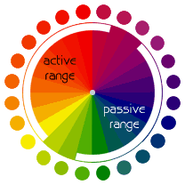

网页与HTML
什么是网页？
- 网页是Internet上的一个页面，网站由若干网页组成；
- 可呈现的网页只有一种格式——HTML格式，网页可以是HTML文件支持的，亦可是动态网页技术生成的；
- HTML文件的扩展名为.html或.htm；
- 一个HTML文件成为Internet上的一页，需要有一个网络空间（用于上传）和网页地址（指向网页）。
HTML——Hyper Text Markup Language （超文本标记语言）
HTML是Internet上用于编写网页的主要语言：
|
HTML主要特点：文档容易创建、存储量小、平台无关性。
HTML的历史：
| 版本 | 说明 |
| HTML 1.0 | 1993.6，互联网工程工作小组（IETF）发布 |
| HTML 2.0 | 1995.11 |
| HTML 3.0 | 1996.1，W3C推荐标准 |
| HTML 4.0 | 1997.12，W3C推荐标准 |
| HTML 4.1 | 1999.12，W3C推荐标准 |
| HTML 5.0 | 2008.8，W3C工作草案推荐标准 |
注：W3C——万维网联盟（World Wide Web Consortium），于1994.10在麻省理工计算机实验室成立。
HTML文件与浏览器
A browser is a specialized software program allowing personal computer users to access the Internet's World Wide Web.HTML文件由浏览器解释执行。同一个HTML文件在不同的浏览器表现不尽相同。 常用的浏览器有：
- Internet Explorer（IE）
- Firefox（火狐）
- Chrome
- Opera
- Safari
HTML网页元素
网页元素有：文本、图像、超级链接、导航栏、表格、表单、多媒体等。
文本： 网页的主体，关于文本通常需设置字体、字号、颜色和其他格式。
图像：网页的基本元素， 可用作标题、网站logo、网页背景、链接按钮、导航栏、背景图等。 网页图像格式有：jpeg、gif、png。
超级链接： 超级链接，又名超链接。是从一源处直达另一目标处的连接指定。目标处可以是：
- 相同网页的不同位置
- 另一个网页（站内或站外）
- 一个文件（pdf文件、图片文件、应用程序文件）
- 电子邮件地址
表格： 组织内容的一种方式，常用于网页布局。
表单： 用于交互收集信息。
多媒体： 网页上可包含的多媒体通常指：声音、动画、视频等内容。
HTML文件结构
HTML文档的编写方法
- 文本编辑工具，如记事本、Notepad++等
- 使用可视化HTML编 辑 器，如 Frontpage、Dreamweaver等
- 由Web 服务器（ 或称HTTP 服务器） 一 方实时动态生成
第一个网页
| <html> <head> <title>my first page</title> </head> <body> This is my first web page! </body> </html> |
|
HTML文件结构
|
简单划分由两部分组成：
|
第二个网页
| <html> <head> <title>my first page</title> </head> <body align="center" bgcolor="lightcyan"> This is my first web page! </body> </html> |
|
源代码特点
- 不区分大小写
- 空格和回车除了代码清晰性外没别的意义
- 标签中可放置属性
- 标签中不可加空格
练习：设计一个标题为“Hello”的网页Hello.html，分行显示学号、姓名和e-mail地址。
HTML标签的使用
HTML文件最基本标签有：html、head、title、meta、body。
标签的使用
HTML中标签的使用形式有如下三种：
- <标签>......</标签>
- <标签 属性名=属性值 ...>......</标签>
- <标签> 或<标签 属性名=属性值/>
说明：大多数标签可设属性，标签与属性之间至少有一个空格分隔。
meta标签的使用
<meta 属性名=属性值 ... />
| 作用 | 格式说明 |
| 标记页面关键词 （供搜索引擎搜索） |
<meta name="keywords" content="具体的关键字"/> 与网站或页面主题相关，具体而非笼统 多个关键字，考虑感兴趣用户群可能的搜索倾向 |
| 标记文档的作者 | <meta name="author" content="作者姓名"/> |
| 标记页面解码方式 | <meta http-equiv="Content-Type" content="text/html; charset=gb2312"/> |
| 网页自动跳转 | <meta http-equiv="refresh" content="5;URL=跳转到的地址"/> 注意：站外链接应由“http://”打头。 |
练习：修改Hello.html，令其10秒钟后自动跳转。
body标签的使用
<body 属性名=属性值 ...> ....... </body>
| 属性 | 描述 |
| align | 对齐方式 (left | center | right) |
| text | 规定文档中所有文本的颜色 |
| bgcolor | 规定文档的背景颜色 |
| background | 规定文档的背景图像 |
| link | 规定文档中未访问链接的默认颜色 |
| alink | 规定文档中活动链接（active link）的的颜色 |
| vlink | 规定文档中已被访问链接的颜色 |
说明：
- 为了使页面美丽大方，通常网页背景要尽量选择浅色；
- 以上属性简单认识即可，HTML4中已推荐由css样式替代以上属性。
- 颜色的设置参见HTML对颜色的控制
marquee标签和滚动公告
<marquee 滚动属性设置> 滚动文字</marquee>
| 属性 | 说明 |
| behavior | 文字的滚动方式，可取值scroll（默认）、slide（只滚动一次）、alternate（来回交替） |
| loop | 循环次数设置 |
| scrollamount | 滚动速度 |
| scrolldelay | 滚动延迟 |
| bgcolor | 滚动文字的背景设置 |
| width | 滚动背景宽度 |
| height | 滚动背景高度 |
说明：
- marquee在ie中的表现较好，在有些浏览器中存在兼容性问题。
- 亦可用style属性说明举动公告的前景色、背景色、宽度、高度、字体等。
- 除了文字公告外，图片、超级链接等网页元素也可以滚动。
如：<marquee direction="left" scrolldelay="50">It's my first webpage</marquee>
HTML标题和段落
标题标签（<H1>~<H6>）
<Hn 属性名=属性值> ....... </Hn>
| <html> <head> <title>HTML各级标题</title> </head> <body> HTML中的六级标题<br> <h1 align="center">一级标题文字</h1> <h2>二级标题文字</h2> <h3>三级标题文字</h3> <h4>四级标题文字</h4> <h5 align="right">靠右对齐的五级标题文字</h5> <h6>六级标题文字</h6> </body> </html> |
六级标题的标签：
|
说明：
- 标题行独立成行；
- <h1>~<h6>可用align属性设置标题文字位置。
居中标签center
除了通过align属性取值center来设置网页元素居中外，HTML中提供了center标签：
<center>......</center>
段落标签p
HTML中的段落如同word中一样，段落结束会自动换行。格式：
<p 属性名=属性值> 段落文本 </p>
说明：p标签也有align属性，但在HTML4下也已不推荐使用。
换行标签
<br> -------插入一个简单的换行符
特殊符号的插入
特殊符号如：<、 （空格）、©等，可通过字符实体输入。
三部分组成：& 实体名 ;
常用特殊字符及对应的字符实体
| 符号 | 字符实体 | 说明 | 符号 | 字符实体 | 说明 |
| | 空格 | × | × | 乘 | |
| “ | " | 引号 | ÷ | ÷ | 除 |
| & | & | &号 | © | © | 版权 |
| ﹤ | < | 小于 | ® | ® | 注册商标 |
| ﹥ | > | 大于 | ™ | ™ | 商标符号 （不一定注册） |
| § | § |
注意：实体名字区分大小写。
练习：制作如左下图所示的“唐诗一首”网页。
HTML对颜色的控制
颜色能赋予设计更多的视觉乐趣和美感，亦可加强设计元素的组织。HTML网页可以是色彩丰富的，好多标签涉及到颜色的设置。
颜色设定方法
- 颜色名，如red、green等。
- 十六进制颜色值#rrggbb，如#ffffff、#ff0000等。
易记的颜色名
| red | pink | darkred |
| gold | orange | darkorange |
| yellow | greenyellow | yellowgreen |
| green | lightgreen | darkgreen |
| blue | lightblue | darkblue |
| cyan | lightcyan | darkcyan |
| white | snow | whitesmoke |
| gray | darkgray | dimgray |
网页安全色
网页安全色是当红色（Red）、绿色（Green）、蓝色（Blue）为0、51、102、153、204、255时构成的颜色组合。共 216 种颜色（其中彩色为210种，非彩色为6种）。
网页的配色
|
 |
网页配色需要经久的积累，不断地调试。用心感悟，提高自己的审美观。
初学时也可借鉴配色工具。
练习：挑选自己喜欢的颜色修改poem.html。
网页从临摹到设计
网页临摹要点
|
分组名称可约定为：
组中组的名称可设为：
|
网页临摹解析

网页临摹练习
找一张悦目并相对简单的网页，用Photoshop进行网页临摹。
| Home | Next |
©2012-2018 Yang Peili. All rights reserved. contact me